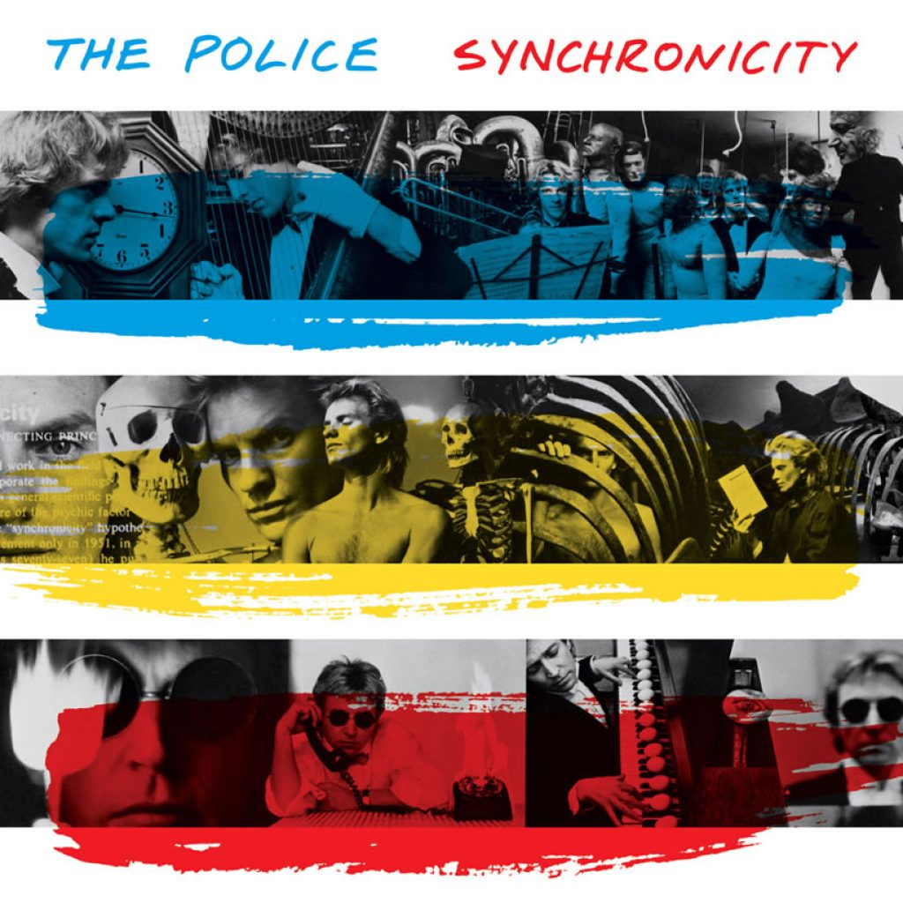
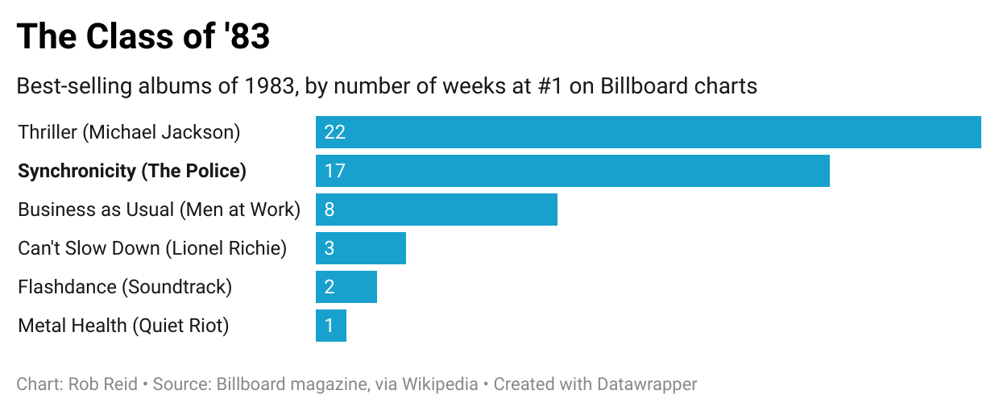
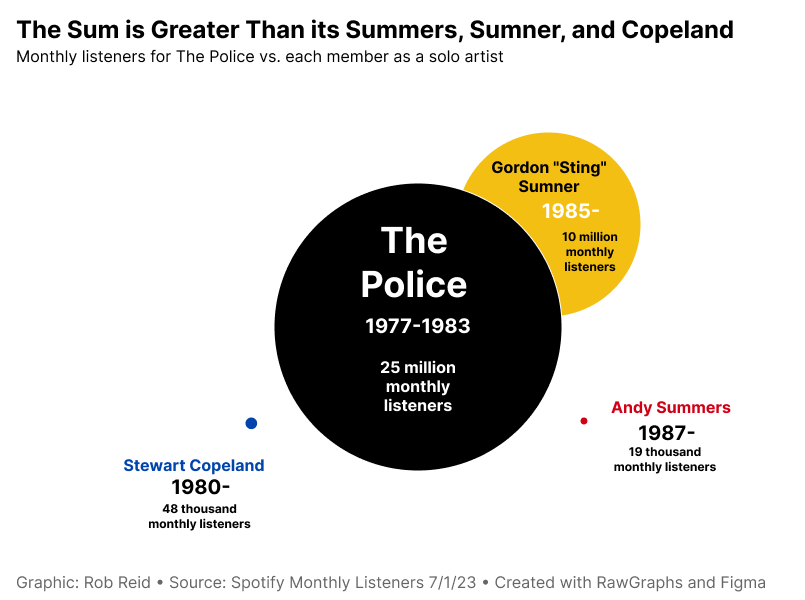
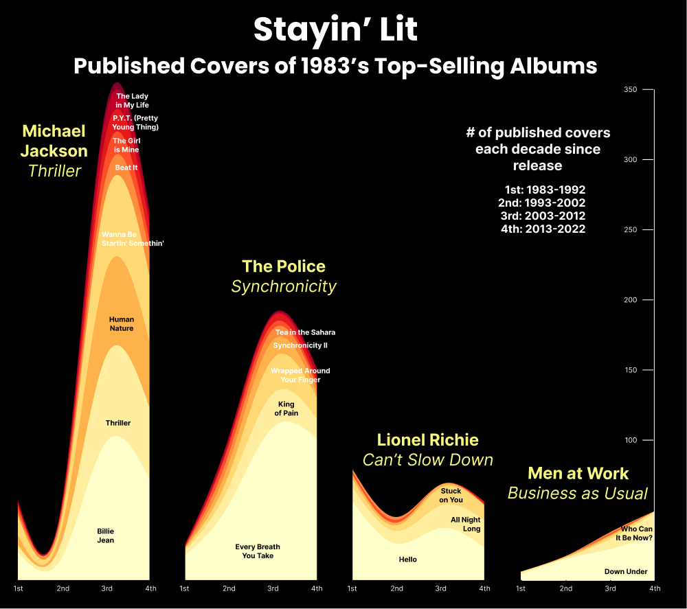
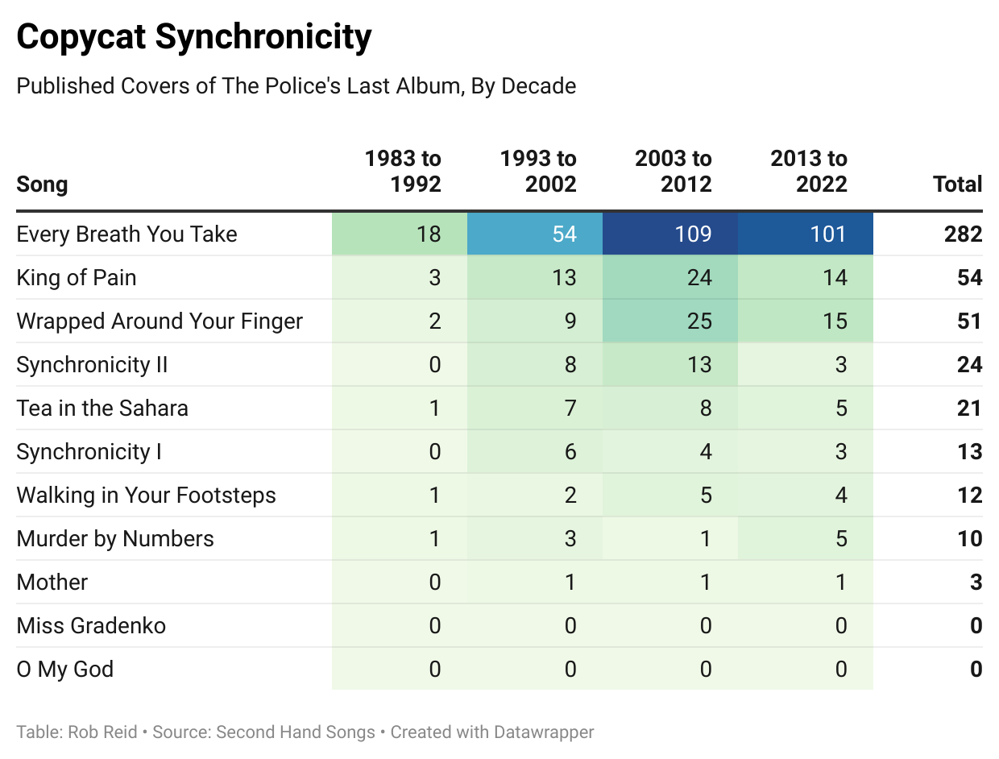

Another suburban family morning
Grandmother screaming at the wall
We have to shout above the din of our rice krispies
We can't hear anything at all
-Synchronicity II (The Police)
Not long after Michael Jackson's Thriller began its ascent to selling an all-time record 70 million albums following its release in late 1982, the English power trio The Police twice interrupted Jackson's reign at the top of the charts with their genre-bending Synchronicity.
Bolstered by a swarm of hits including Every Breath You Take, Synchronicity II, King of Pain, and Wrapped Around Your Finger, The Police held their own in direct competition with Jackson hits such as Billie Jean, Beat It, and Human Nature. 1983 opened under the reign of Business as Usual by Men at Work, and ex-Commodore Lionel Richie saw success in December. But Thriller and Synchronicity dominated the charts for most of the year.

The Police forged their most successful record amidst great internal turmoil. Sting and Andy Summers' marriages were crumbling. Each member of the trio worked from their own separate recording space to mitigate intra-band feuding, but tension persisted.
Stewart Copeland would add drum tracks to Every Breath You Take in the morning, only to find Sting erased them in the afternoon— resulting in an end product Copeland felt had "an utter lack of groove." Andy Summers hated Wrapped Around Your Finger.
"I've never been much of a fan of that song," he said. "Sting got to shoot his part last in that video and made a meal of knocking all the candles out. Fuck him."
Sting, in turn, hated the songs written by Summers and Copeland.
"Explaining to someone why their song isn't working is a bit like saying their girlfriend's ugly," he mused years later. "It's a very personal thing."
"I don't think any grown man can be in a band," he added.
That record would be their last, but The Police as a collective remain more successful than the subsequent work of each of the members' solo acts.

Sting's proclivity towards philosophy and literary references may have helped anchor the band's place in history. While Wrapped Around Your Finger references timeless works of Faust and Greek mythology, Synchronicity II channels Yeats and Jung as it described suburban commuters "packed like lemmings into shiny metal boxes."
But Sting and Stewart Copeland are now in their 70s, Andy Summers recently turned 80, and the fan base they captured at their commercial peak in the '80s is growing old, too. Still, some of the most devoted Police fans have helped sustain their legacy, publishing a plethora of covers over the decades.
Data acquired from Second Hand Songs, a database of officially published cover tunes, shows Synchronicity in the shadow of the Michael Jackson's Thriller but still well beyond other popular peers from the class of 1983.

Every Breath You Take has been a runaway favorite cover, even though listeners still confuse the song about a possessive lover's jealousy for a gentle love song, even at weddings. But tribute bands have breathed new life into not just the other hits but also some of the more experimental tracks. Tea in the Sahara, for instance, charted well only in Poland at the time of its release, but Second Hand Songs tracks 21 published covers in the four decades since.

Devil and the deep blue sea behind me
Vanish in the air you'll never find me
I will turn your face to alabaster
When you'll find your servant is your master
-Wrapped Around Your Finger (The Police)
In February 2023, the U.S. Library of Congress helped cement Synchronicity's place in history by placing it in the National Recording Registry for being "culturally, historically, or aesthetically significant."
And then in June, the instrumental trio Hazelrigg Brothers published a cover of the Synchronicity album in its entirety. Notably this recording includes a take of Miss Gradenko, a Stewart-Copeland-penned track that hadn't yet been counted in the Second Hand Songs database.
For a technical background on this story, see my GitHub repository.